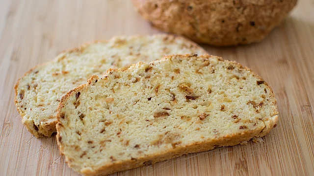

Zwiebelbrot
Home

Die Zubereitung braucht nur wenige Minuten und ist auch für Vegarier geeignet.
Zutaten
- 500g Mehl
- 500g Magerquark
- 2 TL Salz
- 1 Pck. Backpulver
- 2 Eier
- 100g Röstzwiebeln
Zubereitung
- Mehl, Backpulver und Salz vermischen
- Magerquark, verquirlte Eier und Röstzwiebeln dazugeben und zu einem Teig verkneten
- Teig zu einem Brotlaib formen oder in eine Brotform geben
- Bei 190° Ober-/Unterhitze im vorgeheizten Backofen ca. 30 Minuten backen